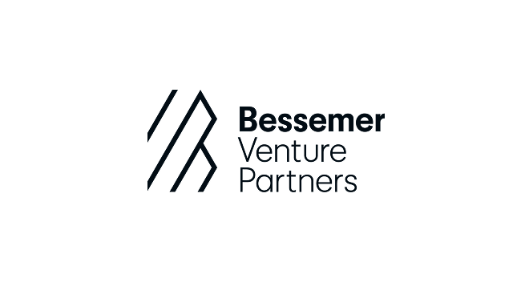
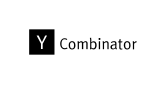

Expert in Residence

In The Kitchen is a positioning consultancy designed to help B2B technology leaders land the decisions and ideas that create authentic category leadership.
If this is you, you’re a good fit for us
Expert in Residence
Senior Advisor


People will tell you positioning is a game of inches. Category leaders disagree. They drive compounding advantages across four dimensions: capability, credibility, convenience and cost.
“Jon helped us execute a crucial strategic repositioning and build a message that we fully own. Within weeks of launching, we closed our first enterprise deal and built a deep pipeline. The ideas and language we co-created are pulling the company forward.”

Typical positioning focuses on workshops or copywriting. We deliver the hardest, most important thing. Decisions. This how we do it.
Get the bookThe underlying truths that matter about your company, category, and buyers.
Genuine working conversations with the people who hold a stake in positioning.
Simply expressed, unadorned definition of your positioning.
Core sales and marketing assets that make positioning shippable.
For select clients, we take on limited brand-level creative work.
You walk away with positioning decisions you fully own, and everything you need to hit the market harder than ever.
“We knew our brand was not reflecting our aspirations to be a generational company. Jon spent the time to deeply understand our origin, vision, and positioning. We also loved that when we met Jon in the selection process, we met exactly who would do the work for us.”
“Jon has the rare ability to completely immerse himself in a world—a product, an ecosystem—and provide piercing clarity in how you communicate what you do, who you are, and the value you add.”
“Jon helped us craft positioning that truly resonated. The results speak for themselves: our win rate among target customers more than tripled. Jon also played a key role in rewriting our website copy, which contributed to a 31% lift in session-to-demo conversion after launch.”
“Jon came strongly recommended through our investors at First Round Capital and helped us nail our new positioning, website revamp (and my personal confidence and excitement) in 6 weeks flat.”
“Jon quickly grasped our business needs and helped us develop a powerful brand strategy. His insights and collaborative approach were invaluable.”
“Jon has been invaluable in helping us develop our brand position at Mojo Crowe. He is insightful, creative, pragmatic, and he genuinely cares.”
“Jon’s combination of strategic thinking, facilitation skills, and bias toward execution was exactly what we needed in a positioning consultant.”
“Jon helped us execute a crucial strategic repositioning and build a message that we fully own. Within weeks of launching, we closed our first enterprise deal and built a deep pipeline. The ideas and language we co-created are pulling the company forward.”
“This was a definite turning point for our business and sent a signal loud and clear to employees, customers, partners and the market in general.”
“Jon’s work was instrumental in our ability to accelerate our pipeline and raise a funding round at a $1.3 billion valuation.”
“Jon creates cut-through messaging that drives impact, and most importantly, sales.”

Jon Itkin cut his teeth as a copywriter, strategist, and product marketing leader for companies from Google and Salesforce to early-stage startups.
Jon shares ideas on LinkedIn, in his newsletter, and in the articles section of this site.
It takes at least four weeks of deep, meaningful work to partner with us. We are booked anywhere from weeks to quarters ahead. We don’t farm out positioning work. What you see, you get.
Our clients’ competitors would love to read case studies about why they’re losing, so we don’t publish them. But we can tell you what happened after the work. One client tripled their win rate against the entrenched category leader. Another launched a new category and closed six-figure enterprise deals within six weeks. Another got 17 press hits and 10x product signups on launch day.
Get on the calendar, and we’ll walk you through the work and the stories behind it.
Minimums start at $25,000. Add-ons like deeper qualitative research or travel-intensive live working sessions can add to the cost. Combined brand and positioning processes start at $60,000.
Probably not. If you’re still trying to figure out what the market wants from you and don’t yet have product-market fit, we recommend doing lightweight positioning work on your own, with shorter tests and faster cycles. A freelancer could be a great person to help you with this, but our consultancy is probably not the best choice.
We want to talk to your customers. Positioning without buyer input is like a house with three walls. You can build it, but it leaves you exposed. At a minimum, we will ask to talk to a small handful of your best customers. When necessary, we will do deeper buyer research in partnership with you and your team, or potentially a third-party research partner.
We recommend having the senior-most person in your organization be the executive sponsor for positioning work. Positioning requires decisive leadership and close participation at the very top of the organization. If your CEO isn’t planning to pay attention, we’re happy to have a conversation with them about why it’s important.
We built our decision-based positioning methodology after personally witnessing executive teams struggle with alignment. The only way out of deep misalignment is through it, with clarity on the threshold for “disagree and commit.” Sometimes that means taking the time to fully interrogate one specific decision with major implications. We have built our entire process and engagement style to allow for that time and to facilitate the conversations that matter.
AI is a useful tool for positioning. But AI cannot make decisions that fully belong to human beings. The most valuable contribution that In The Kitchen makes through positioning work is helping executive teams fully map, understand, agree on, and then act on critical decisions. This is and will always be a fundamentally human act.
Yes, we do. We use AI in many small ways and in some big ones to help with positioning. We use AI to create a backdrop for every engagement, where our decision-based positioning methodology functions as a referee and backstop to ensure we surface and land every key positioning decision. It does not do the thinking for us. It helps ensure the positioning team’s thinking has integrity. Otherwise, it is very useful for synthesizing insights from across large numbers of buyer interviews and call transcripts, helping with the grunt work of category research, and simple things like capturing meeting notes and action items.
We are often booked weeks to months to full quarters in advance. If you want our help, we want you to have it. But please give us advance notice.
Yes, many. Just ask.
We maintain a list of the strongest, most active independent creatives in B2B technology, and curate the right creative team for every creative project. This gives us access to the best talent without the overhead of an agency.
© 2026 · In The Kitchen · Positioning for B2B tech